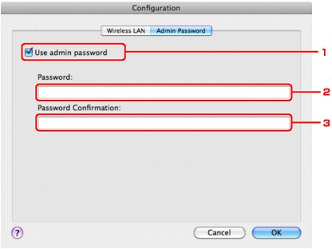

-
Start up IJ Network Tool.
-
Select the printer in Printers.
-
Click the Configuration button.
-
Click the Admin Password button.
-
Use admin password
Set a password for the administrator with privileges to set up and change detailed options. To use this feature, select this check box and enter a password.
 Important
Important-
The password should consist of alphanumeric characters and be no longer than 32 characters. The password is case-sensitive. Do not forget the password you set.
-
-
Password
Enter the password to set.
-
Password Confirmation
Enter the password again for confirmation.
-
-
Click OK.
A dialog is displayed asking you for confirmation before the settings are sent to the printer. If you click OK, the settings are sent to the printer and the Transmitted Settings dialog is displayed.